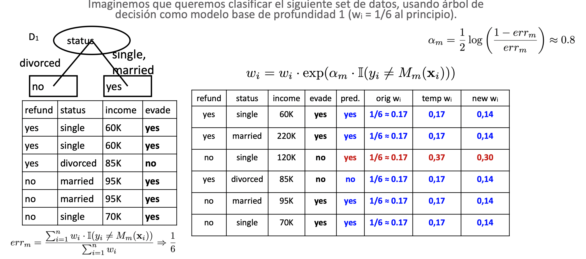

5 Resumen A. Supervisado
5.1 K vecino más cercano (k-NN)
5.1.1 Definiciones de k-NN
- k-NN es un tipo de aprendizaje basado en instancias o aprendizaje perezoso (lazy).
- k-NN almacena los datos de entrenamiento p-dimensionales y retrasa el proceso de aprendizaje hasta que se debe clasificar una nueva instancia.
- Para predecir un nuevo punto, los vecinos k más cercanos se calculan utilizando la distancia
- La clasificación final se realiza en función de las etiquetas de clase de estos vecinos.
5.1.2 Algoritmo k-NN
- Deje que x_j sea un nuevo punto p-dimensional sin etiquetar.
- Calcular d(x_i, x_j) para i={1,...,n}
- Encuentra los vecinos k más cercanos de x_j (d(x_i, x_j) se minimiza).
- Etiqueta x_j basada en los k vecinos más cercanos
5.1.3 Preguntas sobre k-NN
- ¿Cuál es la mejor relación calidad-precio para k?
-
Por lo general, se utiliza un valor pequeño, por ejemplo, k<10.
- ¿Qué medida de distancia d( ) utilizar?
-
A menudo se utiliza la distancia euclidiana (L2).
- ¿Cómo puedo etiquetar xj en función de los vecinos k más cercanos?
-
A menudo se utiliza el voto mayoritario.
5.1.4 Características k-NN
Parámetros del modelo:
- k (número de vecinos)
- cualquier parámetro de medida de distancia (por ejemplo, pesos en las entidades)
Fortalezas:
- Modelo sencillo, fácil de implementar
- Aprendizaje muy eficiente: O(1)
Debilidades:
- Inferencia ineficiente: tiempo y espacio O(n)
- Maldición de la dimensionalidad: A medida que aumenta el número de entidades, necesita un aumento exponencial en el tamaño de los datos para asegurarse de que tiene ejemplos cercanos para cualquier dato dado.
5.2 Clasificador bayesiano
5.2.1 Naive Bayes
Naive Bayes aprende una distribución condicional de la probabilidad. Dado un punto de datos x, la salida del modelo es la probabilidad que x pertenezca a una clase específica.
Naive Bayes utiliza 3 conceptos clave:
- Probabilidad condicional
- Teorema bayesiano
- Independencia condicional
- Truco:
-
Asumiremos Ingenuamente independencia condicional de X_1, X_2, ...,X_k dado C (aunque esto no necesariamente sea cierto)
P(C|X_1, X_2, ...,X_k)\propto \prod_{i=1}^{k}P(X_i|C)P(C)
Ahora fácilmente podemos calcular cada P(X_i|C) a partir de los datos.
5.2.2 Algoritmo de Naive Bayes
- Fase de aprendizaje: Dado un conjunto de entrenamiento S,

Salida: Tablas de Probabilidad condicional; para elemento x_j, X_j \times L
- Fase de prueba: dada una instancia desconocida X' =(a'_1,...,a'_n)
Buscar tablas para asignar la etiqueta c* a X' si:
5.2.3 Características de Naive Bayes
Fortalezas:
- Fácil de implementar y se puede aprender de forma incremental
- A menudo funciona bien incluso cuando se viola la suposición de independencia
- Se puede aprender gradualmente
- Los valores que faltan se ignoran en el proceso de aprendizaje
- Modelo robusto con respecto a valores atípicos y datos irrelevantes
Debilidades:
- La suposición condicional de clase produce estimaciones de probabilidad sesgadas
- Las dependencias entre variables no se pueden modelar
5.2.4 Conclusiones de Naive Bayes
- Naive Bayes se basa en el supuesto de la independencia
- El entrenamiento es muy fácil y rápido; solo requiere considerar cada atributo en cada clase por separado
- La prueba es sencilla; simplemente buscando tablas o calculando probabilidades condicionales con distribuciones normales
- Un modelo generativo popular
- Performance es competitivo para la mayoría de los clasificadores de última generación, incluso en presencia de una violación de la suposición de independencia
- Muchas aplicaciones exitosas, por ejemplo, filtrado de correo no deseado
5.3 Árboles de Decisión
5.3.1 Estructura de un Árbol de Decisión
Un árbol de decisión es una estructura similar a un diagrama de flujo en la que:
- Cada nodo interno representa una “prueba” en un atributo
- Cada rama representa el resultado de la prueba
- Cada nodo hoja representa una etiqueta de clase
Dado un punto de datos x, la salida del modelo es la probabilidad de que x pertenezca a una clase específica.
5.3.2 Definición
Un árbol de decisión segmenta los datos de entrada utilizando secciones rectangulares del espacio
5.3.3 Algoritmo de Hunt
Sea D_t el conjunto de registros de entrenamiento que llegan a un nodo T
- si D_t contiene registros que pertenecen a la misma clase y_t, entonces t es un nodo hoja etiquetado como y_t
- Si D_t es un conjunto vacío, entonces t es un nodo hoja etiquetado por la clase predeterminada, y_d
- Si D_t contiene registros que pertenecen a más de una clase, utilice una prueba de atributo para dividir los datos en subconjuntos más pequeños. Aplicar el procedimiento de forma recursiva a cada subconjunto.
5.3.4 Consideraciones en Árboles de Decisión
Cómo especificar los puntos de corte de atributos
Número de formas de dividir
- División de 2 vías
- División multi vías
Tipos de atributos
- Nominal
- Ordinal
- Continuo
Particionamiento de atributo continuo
- Partición binaria: Regla única que divide el atributo en dos subconjuntos (X_j > v). Podría ser computacionalmente costoso, porque debe considerar todas las divisiones posibles y encontrar el mejor corte.
Decisión de discretización: Formar un atributo categórico ordinal
- Estático: discretizar una vez al principio (edad<30, 30<edad<40, 40<edad)
- Dinámico: los rangos pueden variar dependiendo de la rama del árbol
Métodos de crecimiento completo
- Todos los ejemplos de un nodo pertenecen a la misma clase
- No quedan atributos para divisiones posteriores
- No quedan muestras
¿Qué impacto tiene esto en la calidad de los árboles aprendidos?
- Los árboles sobreajustan los datos y la precisión de las pruebas disminuye.
- El modelo aprende los datos de entrenamiento, pero no se generaliza a los nuevos datos.
- La poda se utiliza para evitar el sobreajuste.
Poda
Pre poda
- Aplicar una prueba estadística para decidir si se debe expandir un nodo
- Utilice una medida explícita de complejidad para penalizar los árboles grandes (por ejemplo, longitud mínima de la descripción)
Post poda
- Utilice un conjunto de ejemplos para evaluar la utilidad de podar nodos del árbol (después de que el árbol esté completamente crecido)
5.4 Máquinas de soporte vectorial
5.4.1 Definición Support Vector Machines (SVM)
SVM es un modelo discriminativo que busca la mejor manera de dividir un espacio, basándose en algunos puntos de este (support vectors), para separarlo en 2 zonas con clases distintas.
Luego se construye un clasificador sobre esa división.
5.4.2 Descripción de SVM
Para separar el espacio nosotros tenemos que buscar un hiperplano (de una dimensión menor a las dimensiones del espacio). En un espacio 2D, como en el próximo ejemplo, el hiperplano será una línea.
Cuando llegue un nuevo punto, podemos evaluar a que lado del hiperplano esta. Dependiendo de a que lado este, lo podemos clasificar (como rojo o azul en este caso).
- El problema es que muchos hiperplanos logran dividir el espacio en 2. ¿Cuál será el mejor? ¿Cómo lo logramos encontrar? ¿Qué factores afectan su posición?
5.4.3 Frontera de Decisión SVM
A cada posible hiperplano que cumpla las condiciones, le dibujaremos un margen equidistante a ambos lados hasta tocar el primer punto del espacio.
Diremos que el mejor hiperplano es aquel que tenga el margen mas grande posible. Esto lo podemos denominar el método del “ancho de avenida”.
Entre el hiperplano representado por la ecuación de la recta de color naranjo tiene un margen mas grande que el rosado; por lo tanto esta dividiendo el espacio de mejor forma. Los “vectores de soporte” son los puntos que tienen contado con los márgenes del hiperplano.
5.4.4 Optimización SVM
El problema es de minimización de tipo convexo cuadrático, con muchas restricciones lineales de inigualdades. Con p+1 parámetros (p es la dimensionalidad de la data) y n restricciones (una restricción por cada entidad).
En este caso podemos usar el método de optimización de Lagrange para maximizar una nueva función y no preocuparnos de las restricciones. Las restricciones serán reemplazadas por multiplicadores de Lagrange y el proceso de aprendizaje será dictado por productos puntos.
Lagrangiano
Definición de L:
Configuración de gradientes de L respecto a incógnitas (W y b):
Restricción de no-negatividad de los multiplicadores de Lagrange:
\alpha \geq 0 \space \forall i \in \{1,2, .., n\}
5.4.5 Interpretación geométrica SVM
5.4.6 Caso no separable SVM
SVM, como lo hemos visto hasta ahora tiene un primer problema. No siempre se puede dividir el espacio con un hiperplano que cumpla las condiciones:
y_i(w \cdot X_i+b)-1 \geq 0
- Para solventar esto, podemos agregar a SVM una “holgura”, que permita soportar una determinada cantidad de puntos en el incorrecto lado de la calle; con el fin de lograr generar el hiperplano.
Al someter la nueva funcioÃÅn de optimizacioÃÅn, con sus restricciones, al Lagrange, obtenemos un resultado praÃÅcticamente igual:
Sensibilidad de C
5.4.7 Limitaciones SVM clásico
Imagina que aplicamos SVM sobre el próximo problema. Puedes seleccionar cualquier C que quieras. Dibuja la mejor línea de separación.
Aunque hay claramente 2 clases distintas, no podemos dividir el espacio con el hiperplano de ninguna manera que nos de un buen resultado.
Es un problema donde necesitamos dividir el espacio de una manera no lineal.
Truco del Kernel
SVM normal funciona bien para DataSet que se pueden dividir linealmente (aunque tengan un poco de ruido, para eso usamos C):
¿Pero que hacemos con data set donde no podemos separar linealmente?
“Mapeamos” o transformamos el DataSet a un dimensión mayor, y en ese lugar buscamos si podemos encontrar un hiperplano y aplicar SVM.
Nuestro nuevo problema de optimizacioÃÅn, considerando una funcioÃÅn de Kernel se ve asiÃÅ:
Existen cientos de Kernels, distintos (es un aÃÅrea de estudio acadeÃÅmico):
- Linear => K(x_i,x_j) = x_i^Tx_j
- Polynomial kernel with degree d => K(x_i,x_j) = (x_i^T x_j+1)^d
- Radial basis function kernel with width \sigma => K(x_i,x_j) = exp(-||x_i-x_j||^2/(2\sigma^2))
- Sigmoid with parameter κ and θ => K(x_i,x_j) = tanh(κ*x_i^T x_j + θ)
5.4.8 Debilidades y fortalezas SVM
Debilidades:
- El proceso de entrenamiento y prueba es lento, debido a tener que solucionar un problema de Lagrange.
- En casi todas sus variedades solo puede clasificar de manera binaria (+1,-1)
- Muy sensitivo al ruido.
- Lo peor: lograr escoger la función de Kernel correcta.
Fortalezas:
- El entrenamiento es fácil, la solución es única y global para todo el espacio.
- SVM no sufre de la maldición de la dimensionalidad !
- No se genera sobretratamiento de manera muy fácil.
- Fácil de entender de manera geométrica.
5.4.9 Modelos Ensamblados
5.4.9.1 Dilema sesgo-varianza
El error de predicción de cualquier modelo de machine learning puede ser separado en tres términos:
- Varianza/Variance: ¿qué tan factible es que cambia nuestra predicción si usamos otro set de datos?. Se relaciona a la complejidad del modelo.
- Ruido/Noise: error base imposible de reducir (variables desconocidas, problemas de adquisicioÃÅn de datos, etc).
- Sesgo/Bias: ¿queÃÅ tan lejana es nuestra prediccioÃÅn promedio con respecto al verdadero valor? Se relaciona a la suposiciones/simplicidad del modelo.
5.4.9.2 Introducción
Es muy difícil construir un solo modelo que obtenga un buen rendimiento (bajo sesgo y varianza).
Enfoque: construyamos múltiples modelos “complejos” o “sencillos” con el mismo o distinto set de datos y combinemos sus predicciones.
Objetivo: obtener “un modelo final” con bajo error de sesgo y varianza.
- Modelos complejos => bajo error de sesgo y alto error de varianza. Combinación de predicciones => bajar la varianza de la predicción.
- Modelos sencillos => alto error de sesgo y bajo error de varianza. Combinación de predicciones => mantendría el alto sesgo, excepto que los modelos se enfoquen en los puntos mal clasificados.
5.4.9.3 Problema multi-clase
Problemas con múltiple clases son usualmente complejos. Un problema multi-clase se puede simplificar a múltiples problemas binarios
- Un problema con m clases puede ser resuelto con m modelos, calculando P(C_i|M_i), donde Mi es un modelo binario para la clase i.
- Un problema con m clases puede ser resuelto con \frac{m(m-1)}{2} modelos, donde cada modelo se enfoca solo entre dos clases.
La predicción final estará dada por:
- Mayor probabilidad.
- Mayoría.
- Voto ponderado.
5.4.9.4 Bootstrap aggregating (Bagging)
5.4.9.5 Bagging
Dado un set de entrenamiento D={(x1,y1),..., (xN,yN)}, y M modelos
For m in range(M):
Obtener una muestra bootstrap (samplear con repetición N puntos) del set de datos D, generando la muestra Dm. Aprender el modelo Mm de Dm
Para clasificar el punto xt se aplica cada uno de los M modelos (M1,M2,…,Mm) a xt y se considera la clase con más votos o un promedio (ponderado).
Los modelos tienen errores no correlacionados debido a la diversidad de puntos en cada muestra bootstrap
Ejemplo
5.4.9.6 Random forest
Uno de los modelos de ensamblados más conocidos es el random forest, el cual es un ensamblado de árboles de decisión.
- El proceso de combinación puede ser promedio simple o mayoría.
- Cada árbol de decisión será “distinto” (limitando el número de variables) en comparación a un puro árbol de decisión.
- El uso de múltiples árboles “distintos” y complejos nos permite reducir la componente de la varianza del error.
5.4.9.7 Boosting
Asignar a cada punto de entrenamiento D={(x_1,y_1),..., (x_N,y_N)}, un peso igual a w_i = 1/N, obteniendo el vector de probabilidades w.
For m in range(M):
- Generar Dm usando los pesos w Aprender el modelo Mm de Dm
- Calcular el error de Mm y cambiar los pesos wi de los puntos incorrectamente clasificados
- Normalizar los pesos wi para que sumen 1
- Estimar la importancia del modelo ùõÇm basado en los errores
- Para clasificar el punto xt se aplica cada uno de los M modelos (M1,M2,‚Ķ,Mm) a xt y se considera un promedio ponderado usando ùõÇm.
5.4.9.8 Adaboost
Uno de los algoritmos más famosos de boosting es adaboost, el cual es un ensamblado de modelos sencillos, donde:
- La predicción final es realizada con un promedio ponderado, basado en el error del modelo.
- Cada modelo será sencillo (obteniendo un alto sesgo).
- El uso de modelos sencillos reduce la varianza del error.
- El foco en puntos mal clasificados reduce el sesgo del error.
Ejemplo:
Primera Iteración

Segunda Iteración
Final
5.4.9.9 Gradient boosting
Gadient boosting, a diferencia de los modelos previos, se enfoca en predecir en forma correcta los errores de los modelos anteriores.
- La predicción final corresponde a la suma de todos los modelos.
- Cada modelo será sencillo (obteniendo un alto sesgo).
- El uso de modelos sencillos reduce la varianza del error.
- El foco en los errores de clasificaciones previas reduce el sesgo del error. Sin embargo, esto puede causar sobreentrenamiento.
Algoritmo de Gradiente Boosting
5.4.9.10 Regressor tree
Un regressor tree es un árbol de decisión enfocado a regresión, donde cada separación busca generar grupos similares de datos.
En vez de “gini” o “entropy” el criterio a minimizar es el “squared_error” que corresponde al error cuadrático medio (otro criterios existen).
En la práctica esto es equivalente a buscar una separación que minimice la varianza de los datos dentro de cada hoja. La “clasificación” final corresponde al promedio de los datos de cada hoja.